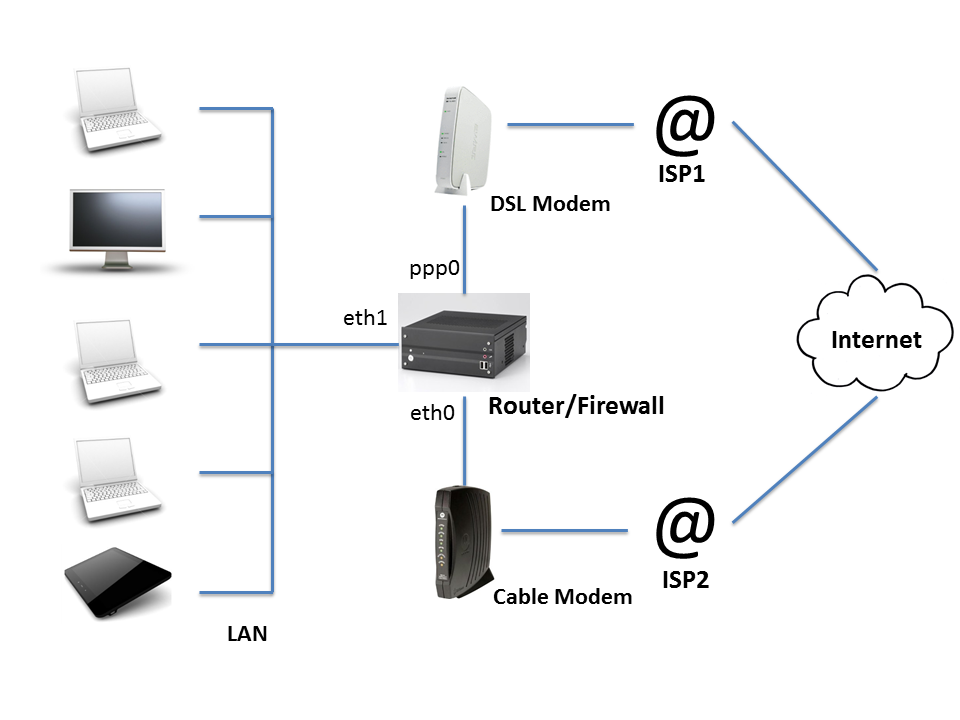

This package allows you to load-balance a home or small business Internet connection across two or more ISPs. You may use it with a single host attached to two ISPs, or on a router/firewall machine to load balance your entire LAN. Network traffic is balanced across both ISP connections to increase upload and download capacity, and if one ISP fails, the other ISP(s) will take over automatically.
Bandwidth is distributed on a per-connection level. This means that you will not see the aggregated bandwidth on any particular download or speed benchmark, but you will see the benefits when multiple data transfers are occurring simultaneously, for example, when several individuals in your household are streaming movies. In addition, multi-connection file transfer protocols such as BitTorrent, will see the benefits of the load balancing.
This package runs on Linux systems, and will not work on Windows or Mac OSX systems. It was designed to interoperate smoothly with distributions based on Debian (e.g. Ubuntu, Mint), as well as those based on RedHat (e.g. CentOS). Other distributions may or may not work out of the box. Please feel free to contribute support for other distributions.
Installation
Here is a step-by-step summary of the steps to install, configure and test Net-ISP-Balance.
1. Download and unpack the distribution
Working on the target machine (router or Internet-connected host), download and unpack the zip file of the source code from https://github.com/lstein/Net-ISP-Balance.Example:
% wget https://github.com/lstein/Net-ISP-Balance/archive/master.zip % unzip master.zip % cd Net-ISP-Balance
This will create the directory Net-ISP-Balance.
Alternatively, you may use git to clone the repository onto your local machine, and optionally check out a stable release. For example:
% git clone https://github.com/lstein/Net-ISP-Balance.git % cd Net-ISP-Balance % git checkout release-1_04 # (optional!)
2. Check and install prerequisites
The following software packages are required for Net-ISP-Balance to run:- C compiler and "make" tool. ("apt-get install build-essential" on Debian/Ubuntu systems will do this for you.)
- Perl version 5.8 or higher.
% perl ./Build.PL % ./Build installdeps % ./Build test % sudo ./Build install
3. Modify the balance.conf configuration file
Edit the example configuration file balance.conf to match your network topology. If you are on a Ubuntu/Debian system, this file will be located at /etc/network/balance.conf. If you are on a RedHat/CentOS system, you'll find it in /etc/sysconfig/network-scripts/balance.conf.You'll need to edit this file to match your network topology. Here is a typical home router setup:
The router/firewall is connected to the home network via network interface eth1. It is connected to the internet via two ISPs, one using a cable modem attached to interface eth0, and the other using a DSL modem via interface ppp0.
The example balance.conf file contains a commented table that corresponds to this network topology:
##service device role ping-ip weight #CABLE eth0 isp 173.194.43.95 1 #DSL ppp0 isp 173.194.43.95 1 #LAN eth1 lan
Remove the # signs from the body of the table and edit to match your network.
The first column is a service name that is used to bring up or down the needed routes and firewall rules.
The second column is the name of the network interface device that connects to that service.
The third column is either "isp" or "lan". There may be any number of these. The script will firewall traffic passing through any of the ISPs, and will load balance traffic among them. Traffic can flow freely among any of the interfaces marked as belonging to a LAN.
The fourth column is the IP address of a host that can be periodically pinged to test the integrity of each ISP connection. If too many pings failed, the service will be brought down and all traffic routed through the remaining ISP(s). The service will continue to be monitored and will be brought up when it is once again working. Choose a host that is not likely to go offline for reasons unrelated to your network connectivity, such as google.com, or the ISP's web site. If this column is absent, then the host will default to www.google.ca, which is probably not what you want!
The fifth column (optional) is a weight to assign to the service, and is only valid for ISP rows. If weights are equal, traffic will be apportioned evenly between the two routes. Increase a weight to favor one ISP over the others. For example, if "CABLE" has a weight of 2 and "DSL" has a weight of 1, then twice as much traffic will flow through the CABLE service. If this column is omitted, then equal weights are assumed.
If this package is running on a single Internet-connected host, not a router, then do not include a "lan" line.
There are additional configuration options related to fine control of packet forwarding as well as link status monitoring. You may wish to uncomment and adjust these as well:
#forwarding_group=:lan :isp #warn_email=root@localhost #interval_ms=1000 #max_packet_loss=15 #max_successive_pkts_lost=7 #min_packet_loss=5 #min_successive_pkts_rcvd=10 #long_down_time=120
- forwarding_group
-
The forwarding_group configuration option defines a set of services that the router is allowed to forward packets among. Provide a space-delimited set of service names or one or more of the abbreviations ":isp" and ":lan". ":isp" is an abbreviation for all ISP services, while ":lan" is an abbreviation for all LAN services. So for example, the configuration below will allow forwarding of packets between LAN1, LAN2, LAN3 and both ISPs. LAN3 will be granted access to both ISPs but won't be able to exchange packets with LANs 1 through 3:
forwarding_group=LAN1 LAN2 LAN3 :isp forwarding_group=LAN4 :ispIf no forwarding_group options are defined, then the router will forward packets among all LANs and ISP interfaces. It is equivalent to this:forwarding_group=:lan :isp - warn_email
- Provides an email address to send notification messages to if the status of a link changes (goes down, or comes back up). You must have the "mail" program installed and configured for this to work.
- interval_ms
- Indicates how often to check the ping host for each ISP.
- min_packet_loss
- max_packet_loss
- These define the minimum and maximum packet losses required to declare a link up or down.
- min_successive_pkts_rcvd
- max_successive_pkts_recvd
- These define the minimum and maximum numbers of successively-transmitted pings that must be returned in order to declare a link up or down.
- long_down_time
- This is a value in seconds after a service that has gone down is considered to have been down for a long time. You may optionally run a series of shell scripts when this has occurred (see below).
4. Make edits to the firewall and route rules (optional)
Net-ISP-Balance allows you to add customized entries to the routing and firewall tables. See Further Configuration for more details.
5. Test load_balance.pl in debug mode (optional)
If you wish to check how the balancing script will configure your system when you execute it, then run (as a regular user) the following command:
% sudo load_balance.pl -d > commands.sh # Ubuntu/Debian % su -c load_balance.pl -d > commands.sh # RedHat/CentOS
The "-d" argument puts the script into debug mode. All commands that it would run on your behalf are placed into 'commands.sh' for your inspection. If you wish, you may pass these commands to the shell in order to preview how your system will perform under load balancing. An example of how to do this is shown below. Note that this doesn't start the link status monitoring daemon needed for automatic failover.
% /bin/sh commands.sh
6. Start load_balance.pl
Become the superuser and run load_balance.pl
sudo load_balance.pl # Ubuntu/Debian su -c load_balance.pl # RedHat/CentOS
This will configure the system for load balancing, installing a restrictive set of firewall rules, and launch the load status monitor (lsm) daemon to monitor each of the ISPs for activity.
7. Arrange for load_balance.pl to be run on system startup time.
You may do this by adding an entry in rc.local:
if [ -x /etc/network/load_balance.pl ]; then
/etc/network/load_balance.pl
fi
Modify as needed for RedHat/CentOS.
Alternatively, my preference is to invoke the script when the LAN interface comes up. On Ubuntu/Debian systems, edit /etc/network/interfaces (Ubuntu/Debian), find the reference to the LAN interface, and edit it to add a "post-up" option as shown here:
auto eth2
iface eth2 inet static
post-up /etc/network/load_balance.pl
...
On RedHat/CentOS systems, create an executable script named /sbin/ifup-local, and populate it with the following code:
#!/bin/sh LANDEV=eth2; if [ "$1" eq "$LANDEV" ] ; then /etc/sysconfig/network-scripts/load_balance.pl fi
Be sure to change "eth2" to the correct device for the LAN interface.
Further Configuration
The default is to establish a reasonably restrictive firewall which allows incoming ssh services to the router from the Internet and rejects all other incoming services. You may modify this if you wish by adding additional firewall rules and routes.
The routes and rules are located in these subdirectories on Ubuntu/Debian systems:
/etc/network/balance/firewall # firewall rules /etc/network/balance/routes # routes
and in these directories on RedHat/CentOS systems:
/etc/sysconfig/network-scripts/balance/firewall # firewall rules /etc/sysconfig/network-scripts/balance/routes # routes
Any files you put into these directories will be read in alphabetic order and added to the routes and/or firewall rules emitted by the load balancing script.
A typical routing rules file will look like the example shown below.
# filename: /net/network/balance/routes/01.local_routes.conf ip route add 192.168.100.1 dev eth0 src 198.162.1.14 ip route add 192.168.1.0/24 dev eth2 src 10.0.0.4
Each line will be sent to the shell, and it is intended (but not required) that these be calls to the "ip" command. General shell scripting constructs are not allowed here.
A typical firewall rules file will look like the example shown here:
# filename: /net/network/balance/firewall/02.accept.conf # accept incoming telnet connections to the router iptable -A INPUT -p tcp --syn --dport telnet -j ACCEPT # masquerade connections to the DSL modem's control interface iptables -t nat -A POSTROUTING -o eth2 -j MASQUERADE
You may also insert routing and firewall rules via fragments of Perl code, which is convenient because you can get the configured service and interface names from the configuration file and can make use of a variety of shortcuts. To do this, simply end the file's name with .pl and make it executable.
Here's an example of a file named balance/firewall/02.forwardings.pl that defines a series of port forwarding rules for incoming connections:
$B->forward(80 => '192.168.10.35'); # forward port 80 to internal web server $B->forward(443=> '192.168.10.35'); # forward port 443 to $B->forward(23 => '192.168.10.35:22'); # forward port 23 to ssh on web sever
The main thing to know is that on entry to the script the global variable $B will contain an initialized instance of a Net::ISP::Balance object. You may then make method calls on this object to emit firewall and routing rules. Please read the manual page for Net::ISP::Balance for further information ("man Net::ISP::Balance" after the package is installed).
Calling the Script by Hand
You can invoke load_balance.pl from the command line to manually bring up and down ISP services. The format is simple:
/etc/network/load_balance.pl ISP1 ISP2 ISP3 ... # Ubuntu/Debian /etc/sysconfig/network-scripts/load_balance.pl ISP1 ISP2 ISP3 ... # RedHat/CentOS
ISP1, etc are service names defined in the configuration file. All ISPs indicated on the command line will be maked as "up", others will not be used for load balancing. If no services are indicated on the command line, then ALL the ISP services will be marked up initially and lsm will be launched to monitor their connectivity periodically.
Adding a -d option will print the routing and firewall commands to standard output for inspection.
How it Works
The script uses two load balancing techniques. The first is to set up a multipath default routing destination as described at http://lartc.org/howto/lartc.rpdb.multiple-links.html
ip route add default \
nexthop via 206.250.80.122 dev ppp0 weight 1 \
nexthop via 198.5.13.201 dev eth0 weight 1
This balances network sessions originating from the router, but does usually not work for forwarded (NAT-ed) sessions from the LAN. To accomplish the latter, the script uses a combination of ip routing tables for outgoing connections, the firewall mark (fwmark) mechanism to select tables, and the iptables "mangle" chain to randomly select which ISP to use for outgoing connections:
iptables -t mangle -A PREROUTING -i eth2 -m conntrack --ctstate NEW \
-m statistic --mode random --probability 1 -j MARK-ISP1
iptables -t mangle -A PREROUTING -i eth2 -m conntrack --ctstate NEW \
-m statistic --mode random --probability 0.5 -j MARK-ISP2
This strategy is described at https://home.regit.org/netfilter-en/links-load-balancing/. The module always gives each ISP equal weight; a future version may support the ability to weight traffic towards one ISP or another.
How Do I...?
- ...Allow an incoming connection to a web server running on my router/firewall machine?
- Create a file
named /etc/network/balance/firewall/04.webserver.conf. Set
the contents to:
iptables -A INPUT -p tcp --syn --dport 80 -j ACCEPT iptables -A INPUT -p tcp --syn --dport 443 -j ACCEPTConnections will be accepted on any of public IP addresses that is assigned to your router machine by your ISPs. You will likely want to publish a domain name for this machine using a dynamic DNS hosting service that allows you to run a "round-robin" on the domain name. See Robin-robin DNS for information on the technique, and perform a Google search for "Round-robin dynamic DNS" for a list of paid DNS hosting services that implement this service.
You must run load_balance.pl once after making this edit in order to have the changes take effect.
Be aware that the location of the firewall rules directory different on RedHat and Debian-derived systems. See Further Configuration for the path on your system.
- ...Allow an incoming connection to a web server running on my router/firewall machine, but prevent flooding attacks by limiting incoming connections to 5 per second?
- Change the contents of /etc/network/balance/firewall/04.webserver.conf
to:
iptables -A INPUT -p tcp --syn --dport 80 -m limit --limit 5/s --limit-burst 20 -j ACCEPT iptables -A INPUT -p tcp --syn --dport 80 -j DROPFLOOD iptables -A INPUT -p tcp --syn --dport 443 -m limit --limit 5/s --limit-burst 20 -j ACCEPT iptables -A INPUT -p tcp --syn --dport 443 -j DROPFLOODDROPFLOOD is a firewall rule defined by Net-ISP-Balance that drops the connection and logs it to the system log.
- ...Allow an incoming connection to a web server running on another machine in my LAN?
- This is a firewall forwarding rule that has a Perl shortcut
to help implement it. Assuming that the web server running on your
LAN is at address 192.168.1.10, create the
file /etc/balance/firewall/04.webserver.pl,
make it executable, and write these contents:
$B->forward(80 => '192.168.1.10'); $B->forward(443 => '192.168.1.10');The $B is a Perl variable that holds the Net::ISP::Balance code object. "forward" is the name of a subroutine call.
- ...Forward connections to port 80 on one of my router's public IP addresses to port 8080 on a web server machine running on another machine in my LAN?
- This is similar to the previous recipe, except that you
indicate the destination IP address on the internal machine:
$B->forward(80 => '192.168.1.10:8080'); - ...Reconfigure load_balance for interface(s) whose IP addresses change periodically.
- This can be an issue with network interfaces whose IP addresses
are set by DHCP, as well as with PPP connections that reset
periodically. When the IP address changes, load_balance will detect
that the interface can no longer be used for outbound pings, but
will not reset the firewall rules to accomodate the new IP
address. This can be fixed with the addition of simple scripts that
invoke load_balance.pl when the interface changes:
For DHCP interfaces, put the following script into /etc/dhcp/dhclient-exit-hooks.d:
#!/bin/sh case $reason in BOUND|RENEW|REBIND|REBOOT|EXPIRE|FAIL|RELEASE|STOP) /etc/network/load_balance.pl ;; esacFor PPP and PPPOE interfaces, put the following executable script into /etc/ppp/ip-up.d:
#!/bin/sh /etc/network/load_balance.pl - ...Allow machines on the LAN to access the control interface of a cable and/or DSL modem attached to the router?
- Cable and DSL modems usually provide a web-based control interface associated with the modem's IP address. Sometimes the routing rules that Net-ISP-Balance installs do not provide access to the modem, and attempting to connect to it will fail. There are two alternative techniques to correct this, depending on the type of modem you are using.
-
Modems in "bridge" mode:
This works when the modem's control interface is separate from its data interface. This is the case for a DSL modem that runs PPPOE in bridge mode. Its primary data interface is ppp0 and its control interface is an ethernet interface such as eth2. Create the file /etc/network/balance/routes/01.modem_route.pl containing the following:
$B->add_route('192.168.1.1/32'=>'eth2',1);Replace "192.168.1.1" with the modem's IP address and "eth2" with the network interface that the modem is attached to. The "1" argument causes connections to the modem to be masqueraded, which is handy in the case that the modem doesn't correctly route its responses back to your LAN. Make the file executable, and run load_balance.pl.
Modems in "router" mode:
In other cases, the modem performs routing on its own and shares the same interface as an ISP connection. In this case, you have to tell the router to make sure that connections intended for the modem always go out through this interface. Open /etc/network/balance/routes/01.modem_route.pl and enter the following:
$B->force_route('CABLE','-p tcp --syn -d 192.168.1.100/32');Replace "192.168.1.100" with the modem's management IP address, and "CABLE" with the ISP service name that the modem is attached to.
- ...Force outgoing mail connections to go to a particular ISP?
- You may wish for all your outgoing email to be routed through a
mail transfer host provided by one of your ISPs. However, many ISPs
only accept mail from IP addresses within the blocks that they
assign. To force all outgoing mail to go to the "CABLE" ISP, create
an executable file named 02.outgoing_mail.pl in $ETC_NETWORK/balance/firewall/
with contents similar to this one:
$B->force_route('CABLE','--syn -p tcp --dport 25'); - ...Run an OpenVPN server on my router?
- VPNs and other applications that manipulate the routing table
must be run after load_balance.pl does its thing. Put a command that
restarts OpenVPN into $ETC_NETWORK/balance/post-run/99.openvpn:
/etc/init.d/openvpn restartAdjust as needed for your distribution. In addition you will need to define firewall rules that allow OpenVPN to route between the VPN tunneling interface (typically tun0) and your LAN. Create the file $ETC_NETWORK/balance/firewall/99.openvpn.pl, containing these lines of code:$B->iptables("-I INPUT -p $_ --dport 1194 -j ACCEPT") foreach ('udp','tcp'); $B->iptables("-I INPUT -i tun0 -j ACCEPT'); $B->iptables("-I OUTPUT -o tun0 -j ACCEPT'); foreach ($B->lan_services) { $B->iptables('-I FORWARD -i tun0 -o',$B->dev($_),'-j ACCEPT'); $B->iptables('-I FORWARD -o tun0 -i',$B->dev($_),'-j ACCEPT'); } - ...Run custom commands when an ISP goes up or down?
- You will find a series of directories in
$ETC_NETWORK/balance/lsm named "up.d", "down.d" and "long_down.d".
These correspond to ISP state events; any executable scripts found
in these directories will be executed when the ISP's state
changes. The contents of the "up.d" directory are executed when an
ISP goes up, "down.d" will be executed when an ISP goes down, and
"long_down.d" will be executed when an ISP remains down for a long
time. The long time is determined by the contents of the
"long_down_time" option in the balance.conf configuration file.
The default is 120 seconds (2 minutes).
Each script will be called with a series of 16 arguments describing the event:
- the current state
- the service name
- the ping IP
- the network device
- the email to be notified
- number of replies to the last set of pings
- number of waiting pings
- number of timed out pings
- number of late pings
- consecutive packets which received replies
- consecutive packets waiting for a reply
- consecutive packets that timed out
- average round-trip time
- IP of the device
- the previous state
- a timestamp
License
Perl Artistic License version 2.0 (http://www.perlfoundation.org/artistic_license_2_0).
Credits
This package contains a slightly-modified version of Mika Ilmaranta's <ilmis at nullnet.fi> Link Status Monitor (lsm) package. The original source code can be fond at http://lsm.foobar.fi/.
Author
Lincoln D. Stein (lincoln.stein@gmail.com).
Senior Principal Investigator, Ontario Institute for Cancer Research